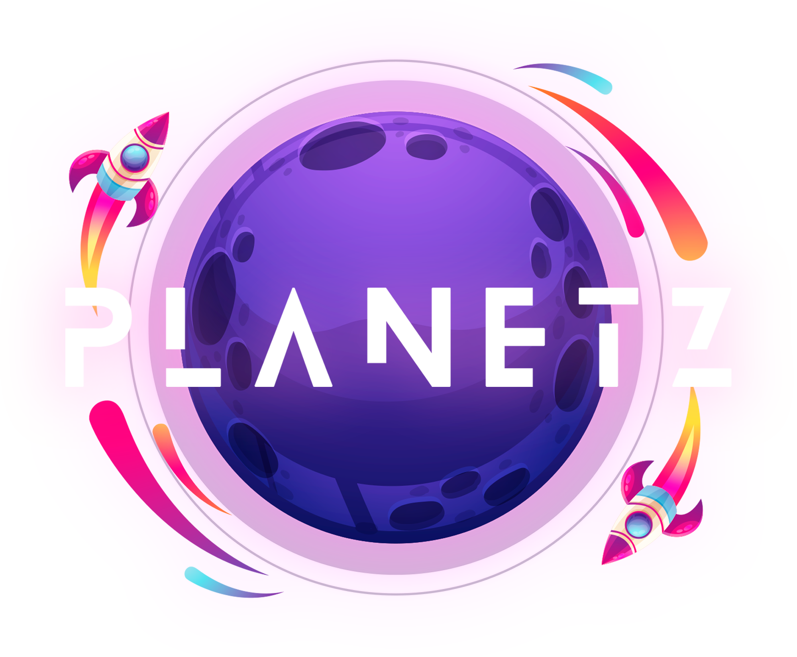

“Planettz” tem a intenção de reunir crianças e médicos numa experiência única e diferente: explorar novos mundos enquanto praticam exercícios fisioterapêuticos. A ideia surgiu por uma simples observação: o público infantojuvenil, especialmente, acha o processo fisioterapêutico monótono, repetitivo e tedioso. Pensamos então: como nós podemos solucionar isso de um modo criativo e tecnológico; assim, “Planettz” nasceu.
A gameficação do processo torna tudo mais divertido para o paciente, além de facilitar o atendimento hospitalar e fisioterapêutico! Após conversar com profissionais da área e pacientes, constatamos que crianças com patologias específicas que impossibilitam sua mobilidade parcial ou total precisavam de uma motivação. A maioria desses exploradores tem que ir constantemente no hospital ou centros fisioterapêuticos e, com essa aplicação, podem brincar e aproveitar as sessões. Com design inclusivo e moderno, que permite que todos entrem na brincadeira de explorar os diversos mundos, independente de sua condição física.
O que seria de um explorador espacial sem sua espaço nave? Navegando por mundos com os mais diversos temas, o paciente é responsável por controlar a nave, através de movimentos estabelecidos. A quantidade de mundos (níveis) e movimentos é definida pelo médico da criança e pode ser praticada todos os dias, tanto em casa quanto nos consultórios! Cada semana, um novo mundo é desbloqueado e está pronto para ser desbravado. Dessa forma, a experiência se mantém dinâmica e motivadora.
A gameficação do processo torna tudo mais divertido para o paciente, além de facilitar o atendimento hospitalar e fisioterapêutico! Após conversar com profissionais da área e pacientes, constatamos que crianças com patologias específicas que impossibilitam sua mobilidade parcial ou total precisavam de uma motivação. A maioria desses exploradores tem que ir constantemente no hospital ou centros fisioterapêuticos e, com essa aplicação, podem brincar e aproveitar as sessões. Com design inclusivo e moderno, que permite que todos entrem na brincadeira de explorar os diversos mundos, independente de sua condição física.
“Planettz” se preocupa principalmente com a saúde de nossos pequenos exploradores. Com o método de avaliação,pais, pacientes e médicos podem registar o avanço das crianças. Se a criança tiver dificuldade de fazer a quantidade e intensidade de movimentos que o médico pediu, o pai pode facilmente registrar informações que julga importante no aplicativo. Assim, na próxima sessão, com auxílio e orientação do fisioterapeuta responsável, podem chegar na melhor solução juntos!
Muito além da Terra! Não é fácil passar horas dentro de casa, muito menos ir todos os dias ao hospital ou centro de fisioterapia. Crianças querem estar se divertindo e brincando no seu tempo livre! O tema espacial surgiu como uma resposta a esse isolamento. Em “Planettz”, o paciente se torna um explorador espacial, controlando uma nave que permite que ele vá à vários mundos diferentes, conheça e interaja com coisas novas com seu avanço!